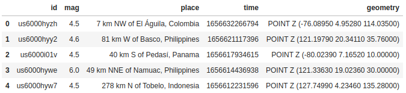
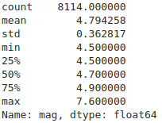
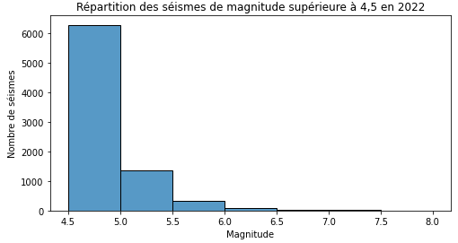
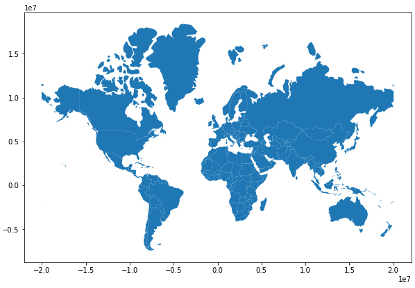

Carte des séismes dans le monde en 2022
Compétences mises en œuvre
- Nettoyage et manipulations de données
- Visualisation de données
Problématique
Ce mini-projet a pour seul but de créer une carte représentant les séismes de magnitude supérieure à 4,5 ayant eu lieu en 2022. Le choix de prendre les séismes de magnitude supérieure à 4,5 a été fait pour ne considérer que les séismes les plus importants. On ignore donc ici une grande partie des tremblements de terre car beaucoup ont une magnitude inférieure à 4,5 voire ne sont même pas ressentis par l'homme (magnitude inférieure à 3).
Le notebook contenant le code ainsi que les fichiers de données sont disponibles ici.
Importation des données et sélection des variables utiles
Les données sont issues de l'US Geological Survey (https://www.usgs.gov/programs/earthquake-hazards/earthquakes, 2023). Le site de l'USGS limite le nombre de données téléchargeables en un seul fichier. Il a donc été nécessaire de télécharger deux fichiers (format geojson) pour obtenir l'ensemble des séismes. La première étape a donc été d'importer les deux fichiers sous forme de deux dataframes avec le module geopandas, puis de les concaténer. Avant de faire cela, je me suis bien-sûr assuré que les deux dataframes contenaient les mêmes colonnes et qu'il n'y avait pas de problèmes de données manquantes dans ces colonnes.
import geopandas as gpd
import pandas as pd
# Importation
df_seismes1 = gpd.read_file('seismes01-06.geojson')
df_seismes2 = gpd.read_file('seismes07-12.geojson')
# Selection des colonnes
df_seismes1 = df_seismes1[['id', 'mag', 'place', 'time', 'geometry']]
df_seismes2 = df_seismes2[['id', 'mag', 'place', 'time', 'geometry']]
# Concatenation
df_seismes = pd.concat([df_seismes1, df_seismes2])
# Affichage des premières lignes
df_seismes.head()

On se retrouve avec une seule table dans laquelle on peut vérifier qu'il n'y a pas de doublons grâce à la méthode duplicated du module pandas. Étant donné que ce n'est pas le cas, passons à la suite.
Courte description des séismes
On peut obtenir un résumé statistique de la magnitude des séismes à l'aide de la méthode describe de pandas.
df_seismes['mag'].describe()

On s'aperçoit alors qu'en 2022 :
- Il y a eu 8114 séismes de magnitude supérieure à 4,5.
- Le séisme le plus important a eu une magnitude de 7,6.
- 50 % des séismes étaient de magnitudes inférieures ou égales à 4,7.
- 75 % des séismes étaient de magnitudes inférieures ou égales à 4,9.
Les séismes de magnitude élevée sont donc plutôt rares (heureusement pour nous !). On peut tracer un histogramme de ces séismes pour mieux se rendre compte de leur distribution suivant la magnitude.
import matplotlib.pyplot as plt
import seaborn as sns
# Reindexation car la dataframe possède des lignes avec le même index
# du à la concaténation de deux dataframes
df_seismes.reset_index(drop=True, inplace=True)
# Création de l'histogramme
fig, ax = plt.subplots(figsize=(8,4))
sns.histplot(x='mag', data=df_seismes, bins=[4.5, 5, 5.5, 6, 6.5, 7, 7.5, 8])
plt.xlabel('Magnitude')
plt.ylabel('Nombre de séismes')
plt.title('Répartition des séismes de magnitude supérieure à 4,5 en 2022')
plt.show()

On voit bien que très peu de séismes ont une forte magnitude.
Carte des séismes
Passons à ce qui nous intéresse : la carte des séismes. Pour réaliser cette carte, j'ai tracé un nuage de points (scatterplot) représentant chaque séisme suivant sa longitude en abscisse et sa latitude en ordonnée. Ce nuage de points se fait par dessus un fond de carte du monde. Il nous faut donc importer les données permettant d'afficher ce fond de carte. Là-aussi, j'ai utilisé un fichier geojson.
Pour créer une carte, il faut définir le type de projection du globe terrestre sur un plan. Ici j'ai utilisé la projection Mercator.
# Chargement du fichier
carte = gpd.read_file('world_map.json')
# Changement de la projection vers la projection Mercator
carte = carte.to_crs('EPSG:3395')
#Affichage du fond de carte
carte.plot(figsize=(10,10))
plt.show()

Comme on peut le voir, nous avons notre fond de carte. Il ne nous reste plus qu'à en modifier l'aspect et représenter les séismes par des disques. Mais pour cela il faut :
- convertir les données géospatiales de df_seismes pour avoir le même CRS (projection Mercator)
- récupérer la longitude et la latitude de chaque séisme dans la colonne geometry
On peut ensuite créer la carte en utilisant des points de différentes couleurs (voir le paramètre c de la méthode scatter de matplotlib qui indique quelles données utiliser pour la couleur des points et le paramètre cmap qui donne l'échelle de couleurs à utiliser) mais aussi de différentes tailles. Pour cela, j'ai créé une liste s des tailles en fonction de la magnitude des séismes.
# Changement CRS
df_seismes=df_seismes.to_crs('EPSG:3395')
# Création de colonnes correspondant à la latitude et la longitude de chaque seisme
df_seismes['lat']=df_seismes['geometry'].y
df_seismes['long']=df_seismes['geometry'].x
#Création d'une liste de rayons des disques représentant les séismes en fonction de leur magnitude
s=[(mag-3.5)**5 for mag in df_seismes['mag']]
# Création de la carte
fig,ax = plt.subplots(1,1,figsize=(25,20), facecolor='white')
carte_seismes = carte.plot(ax=ax, color="black", edgecolor='white', linewidth=0.2)
# Suppression des axes
ax.get_xaxis().set_visible(False)
ax.get_yaxis().set_visible(False)
# Couleur de fond gris foncé
ax.set_facecolor("#202020")
# Représentation des seismes
ax.scatter(df_seismes['long'],df_seismes['lat'], marker="o", s=s,
c=df_seismes['mag'] ,cmap='autumn_r',
edgecolors=None, alpha=0.5)
plt.title("Séismes dans le monde en 2022 (magnitude supérieure à 4,5)", fontsize=15)
#Création d'une échelle de couleur pour la légende
sm = plt.cm.ScalarMappable(cmap='autumn_r')
sm.set_clim(vmin=4.5, vmax=7.6)
plt.colorbar(sm, label="Magnitude", fraction=0.02, shrink=0.4, orientation='horizontal',pad=0.03)
# Texte indiquant la source des données
plt.figtext(0.51, 0.08,
"Source : U.S. Geological Survey (https://www.usgs.gov/programs/earthquake-hazards/earthquakes)",
style='italic', ha="center", fontsize=11, bbox={"facecolor":"white", "edgecolor":"white", "pad":-10})
# Exportation au format png
image=plt.gcf()
image.savefig('seismes', bbox_inches='tight', dpi=200)
#Affichage
plt.show()